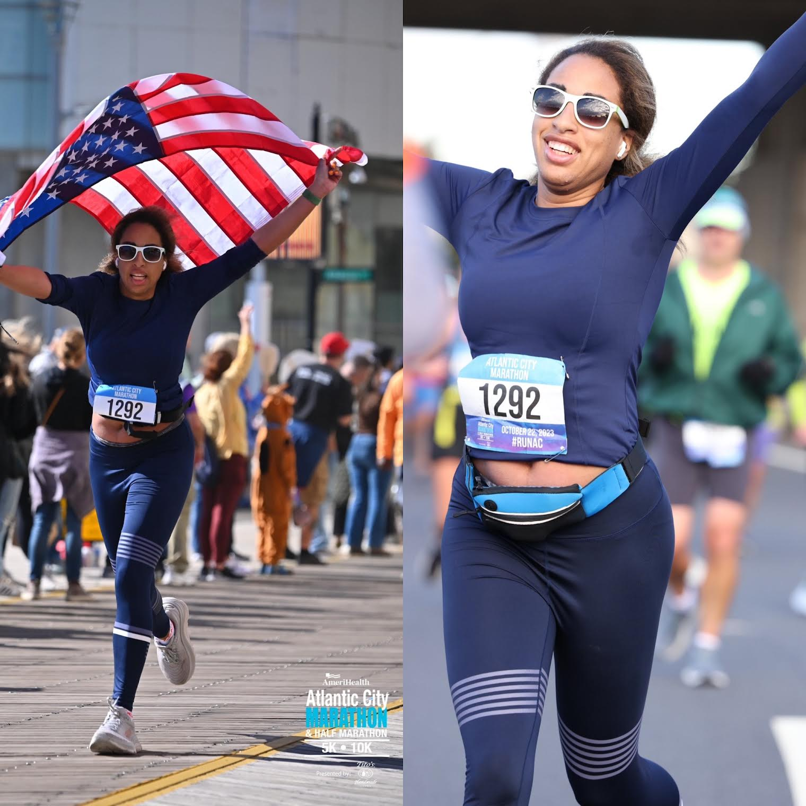
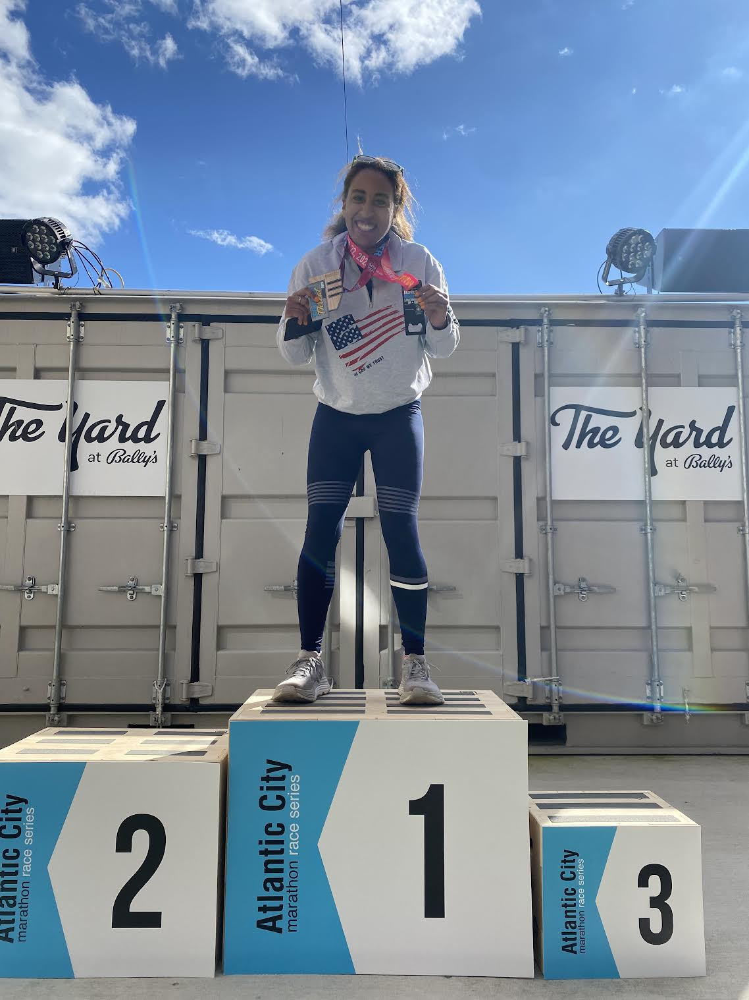
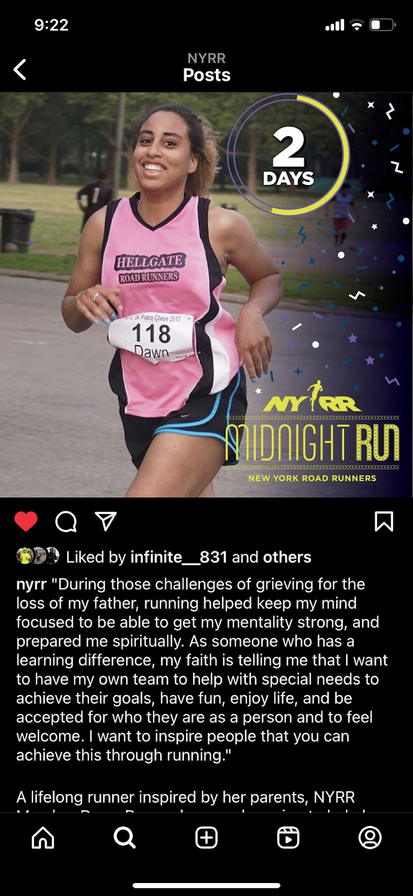

Turning challenges into sources of strength
Hi, my name is Dawn. I am an avid athlete, a Christian, and someone who lives with a learning disability. My page is called Freedom because I've faced many constraints that once held me back, yet those challenges became sources of strength. Through perseverance and faith, I've been successful in many areas by turning my weaknesses into growth. This page is a small demo of my future full site, created to help others find freedom, confidence, and success in their own journeys.
Photos that reflect my personality, interests, and the freedom I've found through faith and perseverance


